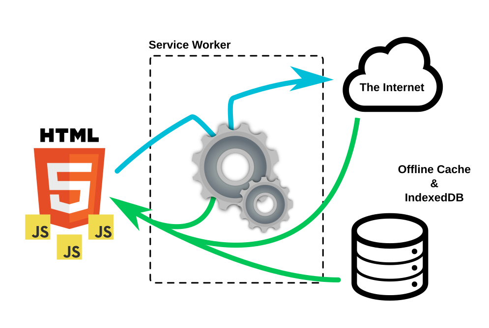

At your service!
A bunch of resources about service workers

About this presentation
https://lodr.github.io/presentations/at-your-service
Salvador de la Puente González
Overview
- What is a service worker?
- What is the state of the art?
- What are our possibilities?
- Real world applications
What is a service worker?
Intercepting requests
- Is a proxy intercepting http requests
- Runs on its own thread (in parallel)
- Survives browser's closing
- But it is not always alive
- Introduction to service workers
Life cycle

What is the state of the art?
- In Chrome? yes!
- In Nightly? yes \o/!
- In Firefox? kind of
- And test in Firefox OS
- Is service worker ready?
What are our possibilities?
- Application cache replacement
- Client side servers
- Gather analytics
- Sync
- New Push API
- Cross Origin Workers?
Real world applications
Offliner
- offliner provides a life-cycle for webapps.
- It only provides the abstract strategy.
- You provide the implementation as plugins.
- See the demo in action!
ServiceWorkerWare
- serviceworkerware ease the task of programming sw.
- Provides a pseudo-declarative syntax a-la express.js.
- Can be extended via middlewares.
- Browse an implementation of a client API
Karma SW adapter
- Karma SW adapter allows testing in a sw environment.
- The idea is to extend the activation event.
- Now it's hardly coupled to mocha, chai and sinon.
- See a working setup for serviceworkerware
More demos & sample code